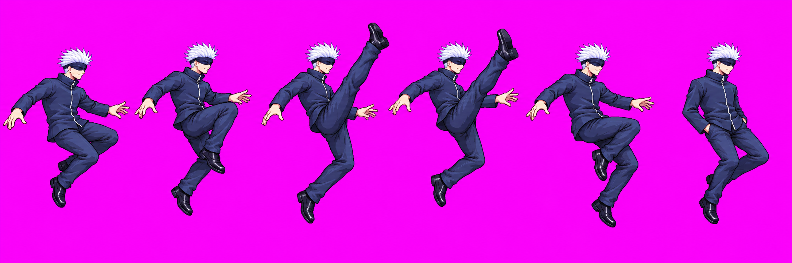
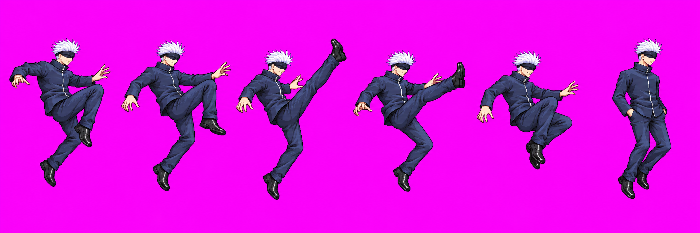

Gojo uair — ENG-112
Technical hold; no image approval requested. The single authorized fresh round used all three calls. No candidate met the stated framing constraints, so the gameplay stand-in remains active and the historical files are unchanged.
Call 2 — held
Six-frame upward kick; the active shoe rises above Gojo’s hair top, and the figure height exceeds the intended square cell.

SHA-256: BE2766581FD0806A33B6C0C7F9678E71CFF364E1886396FF4EC3716F1F6B85EF · 2172×724
Call 3 — held
Six-frame sequence and f5 pocket finish read, but the active shoe again rises above Gojo’s hair top and the figure does not fit the cell height.

SHA-256: F5AFC40AA8306350DEFB576838B44941275A958549260B9414C7D568E0F202EC · 2172×724
Provenance
Call 1’s image generator result path was not captured; it was not recovered by searching generated-image folders or copied into the project. All three calls are accounted for; no further generation is authorized by this round.
Full prompts, source paths, QA notes, and hashes · Nine-move Gojo review page